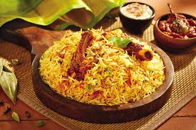

Skip The Diet, Just Eat Healthy With Food Network
Imagine you don't need a diet because we provide healthy and delicious food for you!

ABOUT ME
Will Be A Famous Cook
A cook is a profession for individuals who prepare food for consumption in the food industry in settings such as restaurants. A cook is sometimes referred to as a chef, although in the culinary world, the terms are not interchangeable
My Special Recipe
Here Name of some Recipe, If u want order now.

Biriny
Biryani is a mixed rice dish originating among the Muslims of the Indian subcontinent. It is made with Indian spices, rice, and meat usually that of chicken, goat, lamb, prawn, fish, and sometimes, in addition, eggs or vegetables such as potatoes in certain regional varieties.

Burger
A hamburger is a food, typically considered a sandwich, consisting of one or more cooked patties of ground meat, usually beef, placed inside a sliced bread roll or bun. The patty may be pan fried, grilled, smoked or flame broiled.